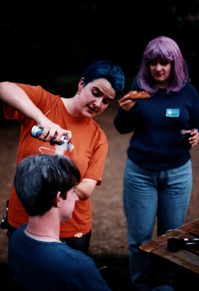

Jo Charman at spacecaption1999

theatreearthprime-sprayinga
Alex Williams,
Jeremy Dennis,
Jo Charman.
Spraying Alex's hair silver to play Luther Arkwright.

windingup-aftermath
Neal Tringham,
Martin Wisse,
Alex Williams,
Alastair McCullough,
Jo Charman.
Standing outside the front gate after winding up the con.